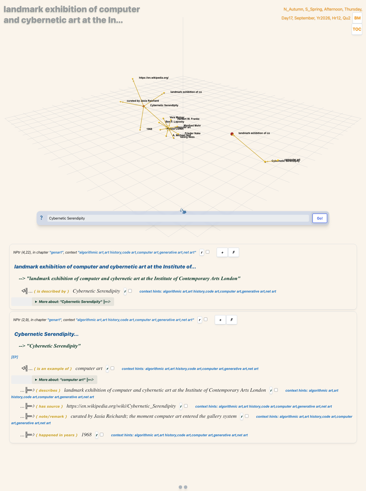

Generative art as one idea rediscovered for sixty years — from oscilloscope traces in 1950 to the browser. 83 nodes and the relations between them, compiled from N4L.
Field note83 nodesArt historyGraphInteractiveSSTorytimeN4L
createsis an example ofother structural arrowsproperty edge: about, describe, note, year (metadata, dashed and dimmed by default)small node: a target, not a declared subject
Hover to trace. Tab to a node and press Enter to read its relations. Every edge below is drawn from the graph source, not hand-drawn.
Keyboard: Tab to a node, Enter or Space to select it. Screen readers: the summary line is announced; the relation rows are not individually announced. Not yet tested with VoiceOver or NVDA.
no node selected
The argument
Generative art is usually told as a story about tools: plotters, then
Processing, then the web, then diffusion models. That story is true and it
explains almost nothing, because the same idea keeps being rediscovered by
people who had no access to the previous version.
The idea is that the artist writes down a rule and something
else carries it out. Once you state it that way the lineage stops
being about hardware. Sol LeWitt's wall drawings (1968) are generative art
made of sentences. Cybernetic Serendipity (1968) is the moment the
gallery system agreed. AARON (1973) is the first serious attempt to make
the executing system an author. Processing (2001) is the moment the
executing system became something an artist could reasonably learn.
Two lineages, one idea
The graph separates two things a timeline tends to merge:
Lineage
Node
What it contributes
instruction
Wall Drawings
the rule as the artwork, execution as delegated
system
AARON
the executing system as an autonomous author
notation
Design By Numbers
a language artists can actually write in
distribution
Processing → p5.js
the idea reaching a mass of practitioners
AARON matters more than its visibility suggests. Harold Cohen spent
decades on a single question — if the machine draws it, who is the author —
and that question is now the central one in the field. The graph makes the
line from AARON to the present explicit rather than implied.
Where LIA sits
LIA is one thread in this graph, not the subject of it. TURUX.at (1997)
is net art; Sum05 (2005) appears alongside
Generator.x, the exhibition where the scene named itself; and
Little Boxes is the suburban grid run through that system.
Placing the practice inside the larger history is more honest than
centring it — and it is what the graph structure reports rather than what
a writer decided.
What the drawing shows, and what it hides
Of the 82 edges in this graph, 25 are structural: they join one subject
to another. The other 57 are properties — a year, a topic, a remark — and
they are most of what a database of any real size contains. Drawing them
identically would let the prose swamp the structure, so the drawing opens
in structure only and the property edges are dashed and
dimmed when you switch to every edge. That is a deliberate
editorial choice, not a claim about the data: the counts above the drawing
and the branch buttons under it both count all 82.
The source
Every node and arrow in the drawing above comes from this file. Nodes with a source URL are traceable; the compiler warns on any edge that cannot be resolved.
-genart
:: generative art, art history, computer art, algorithmic art, code art, net art ::
computer art (about) generative art
" (describe) art in which the artist cedes some control to an autonomous system
" (source) "https://en.wikipedia.org/wiki/Computer_art"
generative art (about) autonomous system
" (note) the artist defines rules; the system produces the outcome
" (source) "https://en.wikipedia.org/wiki/Generative_art"
Oscillons (year) 1950
" (cr) Ben F. Laposky
" (describe) first works made by an electronic analogue computer displayed on an oscilloscope
" (ex) computer art
" (source) "https://en.wikipedia.org/wiki/Computer_art"
Ben F. Laposky (about) computer art
" (note) American mathematician; made the earliest known computer art
" (source) "https://en.wikipedia.org/wiki/Computer_art"
Frieder Nake (about) computer art
" (cr) Polygon Drawings
" (source) "https://en.wikipedia.org/wiki/Computer_art"
Polygon Drawings (year) 1965
" (cr) Frieder Nake
" (describe) plotter drawings from a random-number generating program
" (source) "https://en.wikipedia.org/wiki/Computer_art"
Georg Nees (about) computer art
" (note) exhibited early computer-generated plotter drawings in Stuttgart
" (source) "https://en.wikipedia.org/wiki/Computer_art"
A. Michael Noll (about) computer art
" (note) Bell Labs researcher; produced Computer-Generated Pictures in 1965
" (source) "https://en.wikipedia.org/wiki/Computer_art"
Herbert W. Franke (about) computer art
" (note) German scientist and pioneer of algorithmic art theory
" (source) "https://en.wikipedia.org/wiki/Computer_art"
Cybernetic Serendipity (year) 1968
" (describe) landmark exhibition of computer and cybernetic art at the Institute of Contemporary Arts London
" (note) curated by Jasia Reichardt; the moment computer art entered the gallery system
" (ex) computer art
" (source) "https://en.wikipedia.org/wiki/Cybernetic_Serendipity"
Sol LeWitt (about) generative art
" (cr) Wall Drawings
" (note) conceptual predecessor: the work is an instruction set executed by others
" (source) "https://en.wikipedia.org/wiki/Sol_LeWitt"
Wall Drawings (year) 1968
" (cr) Sol LeWitt
" (describe) written instructions that others execute as the artwork
" (note) generative before generative art had a name; separates program from execution
" (source) "https://en.wikipedia.org/wiki/Sol_LeWitt"
Vera Molnar (about) computer art
" (note) Hungarian-French artist; systematic geometric variation by hand and by computer from the 1960s
" (source) "https://en.wikipedia.org/wiki/Vera_Molnar"
Manfred Mohr (about) computer art
" (note) German artist; the first solo exhibition of computer-generated work in 1971
" (source) "https://en.wikipedia.org/wiki/Computer_art"
AARON (year) 1973
" (describe) autonomous program that produces drawings without a human in the loop
" (note) the longest-running attempt to make a machine that is the author
" (ex) generative art
" (source) "https://en.wikipedia.org/wiki/AARON"
Harold Cohen (about) computer art
" (cr) AARON
" (note) asked the question the field is still arguing: who is the author
" (source) "https://en.wikipedia.org/wiki/AARON"
John Maeda (about) code art
" (cr) Design By Numbers
" (source) "https://en.wikipedia.org/wiki/Design_by_Numbers"
Design By Numbers (year) 1999
" (cr) John Maeda
" (describe) a programming environment built to teach artists to write code
" (note) direct ancestor of the Processing language
" (source) "https://en.wikipedia.org/wiki/Design_by_Numbers"
TURUX.at (year) 1997
" (cr) LIA
" (describe) interactive generative art on the web
" (note) 21 interactive works; code as the medium rather than a tool
" (ex) net art
" (source) "https://liaworks.com/software-art/turux-at-an-early-work-of-interactive-art-1997-present"
LIA (about) code art
" (cr) TURUX.at
" (cr) Sum05
" (cr) Little Boxes
" (source) "https://liaworks.com/about"
Processing (year) 2001
" (cr) Casey Reas
" (cr) Ben Fry
" (describe) open sketchbook language and IDE that normalised code as an art material
" (note) the wave of generative art after 2001 is largely downstream of this
" (evolve-fr) Design By Numbers
" (source) "https://en.wikipedia.org/wiki/Processing"
Casey Reas (about) code art
" (cr) Processing
" (source) "https://en.wikipedia.org/wiki/Processing"
Generator.x (year) 2005
" (describe) exhibition presenting generative art as a codified practice
" (note) the moment the scene named itself and organised
" (ex) generative art
" (source) "https://ab5d.xyz/artists/lia"
Sum05 (year) 2005
" (cr) LIA
" (describe) algorithmic rules directing autonomous agents through a bounded system
" (ex) Generator.x
" (source) "https://ab5d.xyz/artists/lia"
p5.js (year) 2014
" (describe) JavaScript rewrite of Processing's ideas for the browser
" (evolve-fr) Processing
" (note) made generative work a web-native practice again
" (source) "https://en.wikipedia.org/wiki/P5.js"
Little Boxes (year) 2015
" (cr) LIA
" (describe) abstract suburban cityscapes generated by code
" (note) title refers to the 1962 Malvina Reynolds song
" (source) "https://ab5d.xyz/artists/lia"
Evidence from the running database
The capture below is the live viewer for Cybernetic Serendipity, read out of Postgres.

Live node view, chapter genart.
What the compiler caught
Three things, all now fixed in the source. The (cr) arrow had been written backwards on one edge — AARON (cr) Harold Cohen reads as AARON creates Harold Cohen, which is false. Two concepts had been split by capitalisation (Computer art and computer art became separate nodes). And one warning is a false positive worth knowing about: SSTorytime flags a possible note to self when a node's name appears inside its own source URL, which it does for AARON.
This is the useful part of a typed graph. It fails loudly when you assert something false.